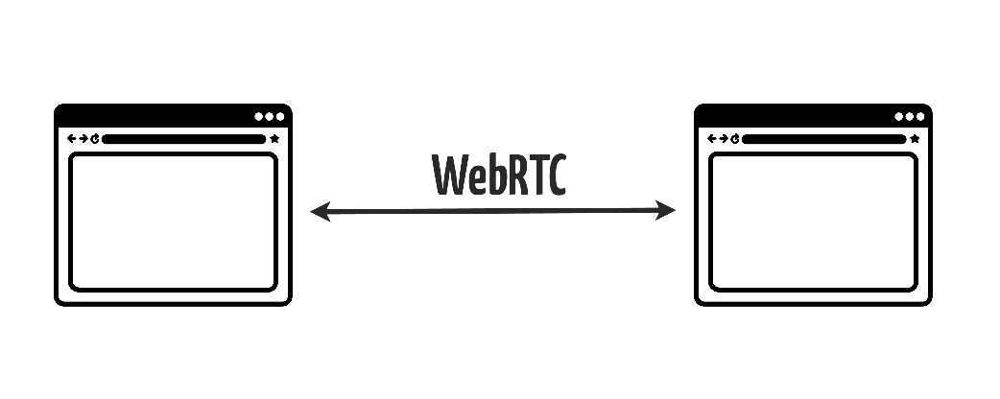
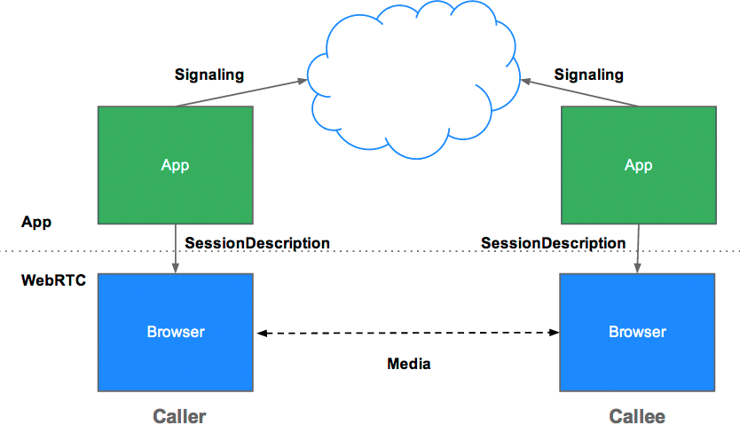
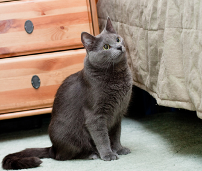

- Represents a stream of audio and/or video
- Can contain multiple 'tracks'
- Obtain a MediaStream with
navigator.getUserMedia()
Building Realtime Webapps with WebRTC and Python
What this talk is:
- Overview of webrtc functions and apis.
- Overview of signalling mechanism.
- Example of implementation.
What it is not:
- Deep drive into webrtc.
- In depth talk about signalling.
So let's start with WebRTC 101
What is Webrtc?
"WebRTC is a free, open project that enables web browsers with Real-Time Communications (RTC) capabilities via simple JavaScript APIs without the use of external native plugins."
WebRTC has 3 main functions.
- Access and acquire video and audio streams
- Establish a connection between peers and stream audio/video.
- Communicate arbitrary data.
And 3 Javascript APIs to perform these 3 functions.
- getUserMedia - Access and acquire video and audio streams
- RTCPeerConnection - Establish a connection between peers and stream audio/video.
- RTCDataChannel - Communicate arbitrary data.
getUserMedia
Acquiring audio and video
getUserMedia
Looks something like this
var constraints = {video: true};
function successCallback(stream) {
// Do things with the stream
}
function errorCallback(error) {
// uh oh, error.
}
navigator.getUserMedia(constraints, successCallback, errorCallback);
RTCPeerConnection
Audio and video communication between peers
RTCPeerConnection does a lot
- Signal processing
- Codec handling
- Peer to peer communication
- Security
- Bandwidth management
...
RTCPeerConnection sample
pc = new RTCPeerConnection();
pc.onaddstream = gotRemoteStream;
pc.addStream(localStream);
pc.createOffer(gotOffer);
function gotOffer(desc) {
pc.setLocalDescription(desc);
sendOffer(desc);
}
function gotAnswer(desc) {
pc.setRemoteDescription(desc);
}
function gotRemoteStream(e) {
attachMediaStream(remoteVideo, e.stream);
}
RTCDataChannel
Bidirectional communication of arbitrary data between peers
- Same API as WebSockets
- Ultra-low latency
- Unreliable or reliable
- Secure
So in short ...
Before WebRTC ..

Now ..
But, how do peers find each other?
It's upto us.
Signalling!!!
WebRTC is peer to peer, but we need servers.
Example
- Each user lets the server know that they are online.
- Server introduces the user to available peers.
- And now they can communicate via webRTC.
Before the actual call begins, clients need to exchange:
- Session control messages
- Media metadata (codecs, bandwidth and stuff)
- Network data (IP address and port as seen by the world)
They use signalling mechanism for that.
It looks something like this.
Now, let's talk about implementation.
- Signalling system is just another messaging service.
- Clients need to pass messages back and forth between them.
- So any messaging service with bidirectional flow will do.
So what are the choices?
- Websocket (All browsers that support webRTC support websocket too.)
- XMPP Jingle
- Commercial messaging platforms eg Pusher, PubNub
- Google AppEngine's messaging protocol
- Data Channel
I can haz teh code?
Sample code for a tornado signalling server
(Incomplete. See github link for runnable stuff.)
global_rooms = {}
class Room(object):
def __init__(self, name, clients=[]):
self.name = name
self.clients = clients
def __repr__(self):
return self.name
class MainHandler(RequestHandler):
def get(self):
room = str(uuid.uuid4().get_hex().upper()[0:6])
self. redirect('/room/'+room)
class RoomHandler(RequestHandler):
def get(self, slug):
self.render('room.html')
Sample code for a tornado signalling server
(Incomplete. See github link for runnable stuff.)
class EchoWebSocket(WebSocketHandler):
def open(self, slug):
if slug in global_rooms:
global_rooms[slug].clients.append(self)
else:
global_rooms[slug] = Room(slug, [self])
self.room = global_rooms[slug]
if len(self.room.clients) > 2:
self.write_message('fullhouse')
elif len(self.room.clients) == 1:
self.write_message('initiator')
else:
self.write_message('not initiator')
logging.info('WebSocket connection opened from %s', self.request.remote_ip)
Sample code for a tornado signalling server
(Incomplete. See github link for runnable stuff.)
class EchoWebSocket(WebSocketHandler):
...
...
def on_message(self, message):
logging.info('Received message from %s: %s', self.request.remote_ip, message)
for client in self.room.clients:
if client is self:
continue
client.write_message(message)
def on_close(self):
logging.info('WebSocket connection closed')
self.room.clients.remove(self)
Sample code for a tornado signalling server
(Incomplete. See github link for runnable stuff.)
application = Application([
(r'/', MainHandler),
(r"/room/([^/]*)", RoomHandler),
(r'/ws/([^/]*)', EchoWebSocket),
], **settings)
application.listen(address, port)
IOLoop.instance().start()
The client-side code
(Incomplete. See github link for runnable stuff.)
var ws = new WebSocket("ourWebsocketListenerEndpointAddress");
function init() {
var constraints = {
audio: true,
video: true
};
getUserMedia(constraints, connect, fail);
}
function connect(stream) {
pc = new RTCPeerConnection(null);
if (stream) {
pc.addStream(stream);
$('#local').attachStream(stream);
}
pc.onaddstream = function(event) {
$('#remote').attachStream(event.stream);
logStreaming(true);
};
pc.onicecandidate = function(event) {
if (event.candidate) {
ws.send(JSON.stringify(event.candidate));
}
};
ws.onmessage = function (event) {
var signal = JSON.parse(event.data);
if (signal.sdp) {
if (initiator) {
receiveAnswer(signal);
} else {
receiveOffer(signal);
}
} else if (signal.candidate) {
pc.addIceCandidate(new RTCIceCandidate(signal));
}
};
if (initiator) {
createOffer();
} else {
log('waiting for offer...');
}
logStreaming(false);
}
Wow! That looks easy!
The CODE
github
Thanks!!!♥!
sunu on Github and IRC
@tarashish on Twitter